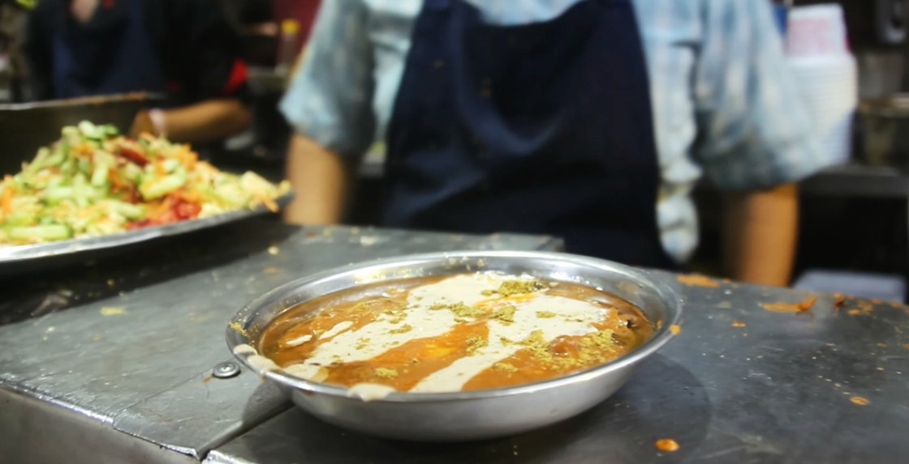
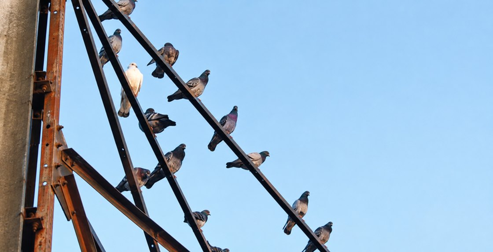
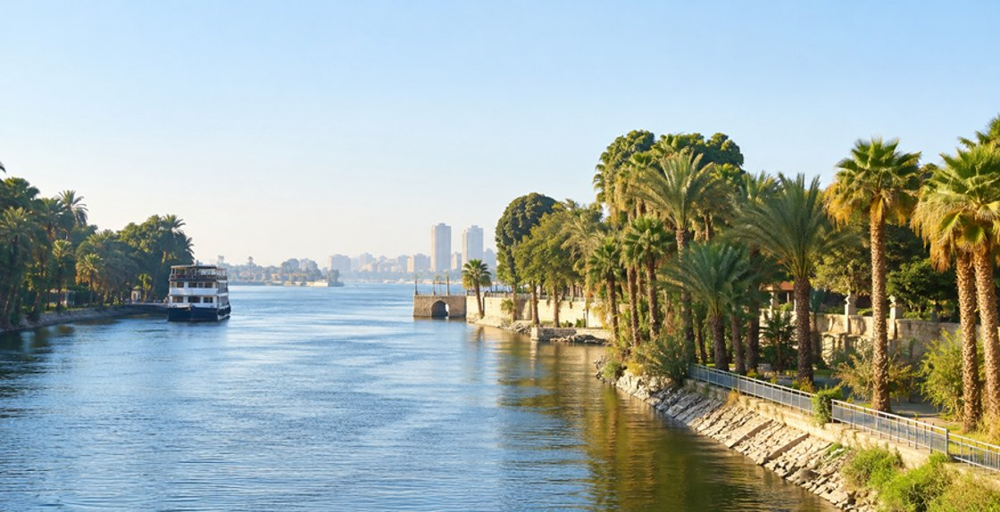
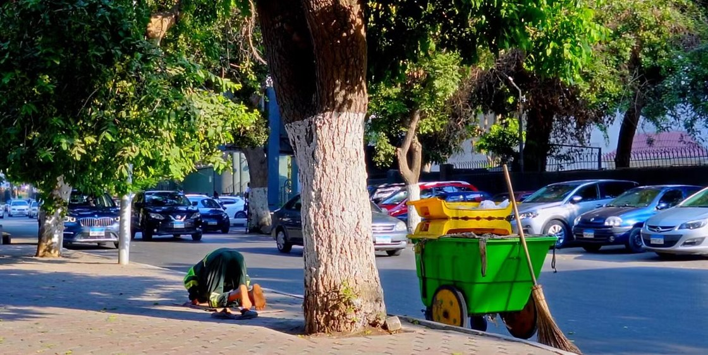
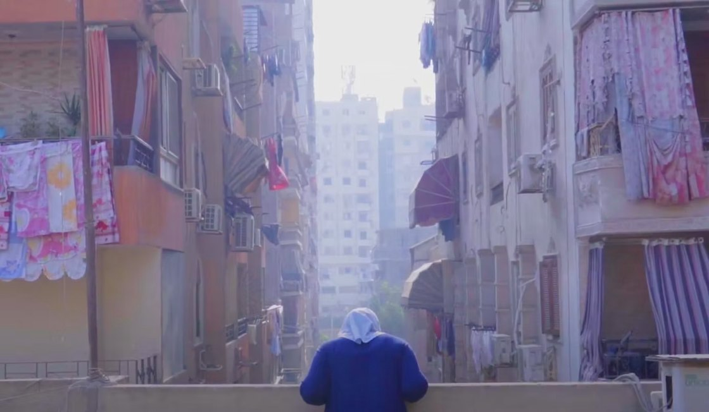
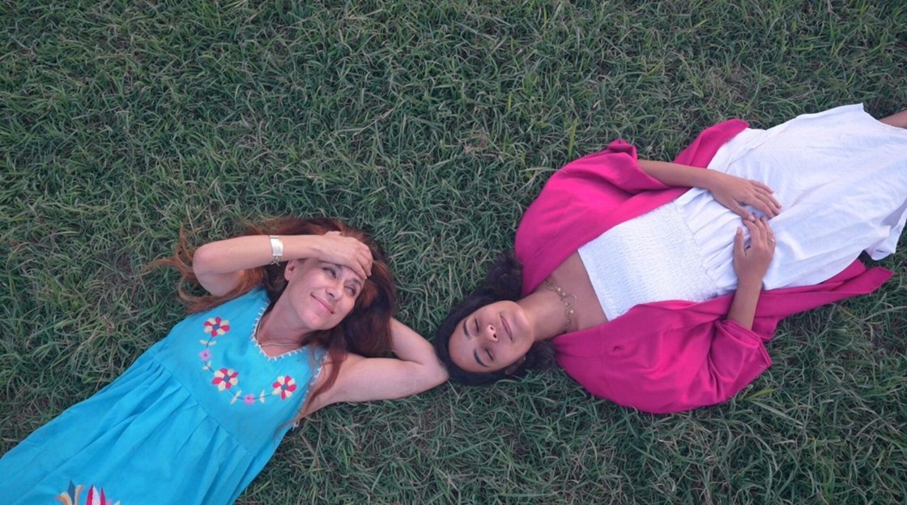

Film
Film & art Cairo, Egypt
Egyptian filmmaker & multidisciplinary artist

Film

Film

Collaborative documentary

Short documentary · 2025

Short documentary · 2023
Film
From the heart of Cairo, Nabil and Somaya are strangers pursuing dreams rooted in their love of food. Though their paths are different, their stories echo one another. Each navigates the delicate space between ambition and circumstance, shaped by memory, sacrifice, and the people who surround them.
Film
“A love letter to Cairo and its people.”




Collaborative documentary · 29 min 53 sec
In this increasingly fast-paced world, especially in big urban cities, everything is becoming man-made, and we indulge and indulge. Every once in a while, if we’re lucky enough, we get to turn the volume down and be humbled by the greatest artist: nature. It has the ability to remind us of what is real and natural amidst the noise. This is an open invitation to embrace the beauty of nature in urban spaces, notice what it can be despite endless urbanization, and become one with it. While everything manufactured can seem like a feat of genius, nature, too, deserves to be celebrated and embraced.



Short documentary · Manassat 2025
Amira, a young woman deeply attached to her grandmother, is struggling to cope with her loss. Their bond was nurtured in her grandmother’s kitchen through cooking and sharing meals together. Now, without her grandmother’s abundant love, Amira feels lost and misses her terribly. As she grieves and searches for love in those around her, including her mother, and within herself, she begins to uncover what might be the key to moving forward despite the pain.



Short documentary · Manassat 2023 · 13 min 15 sec
A short documentary about food waste in the food chain and its link to climate change and hunger.


أميرة عبد الفضيل
Amira Mahmoud Abdel-Fadil is a Cairo-based filmmaker, photographer, writer, and visual artist. She studied broadcasting at October University for Modern Sciences and Arts.
Her documentaries explore family, food, and the environment. Her work also spans digital media, editing, script development, event coordination, and education.
Read the Manassat profile
Selected essays on memory, the creative process and taking chances.